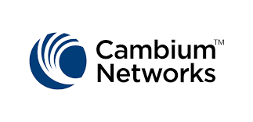
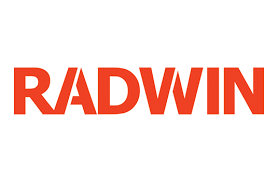
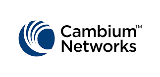
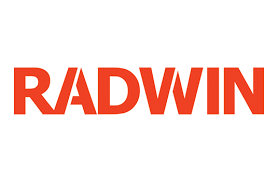
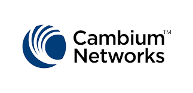
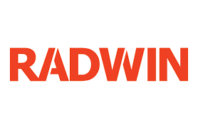

BWA (Broadband Wireless Access) adalah layanan akses broadband nirkabel yang digunakan untuk menyediakan konektivitas data berkecepatan tinggi tanpa media kabel.
BWA banyak dimanfaatkan untuk mendukung konektivitas di wilayah perkotaan maupun daerah yang sulit dijangkau infrastruktur kabel.
PMP adalah solusi untuk menyediakan konektivitas nirkabel point-to-multipoint berkapasitas tinggi untuk jaringan area luas. Teknologi ini sering digunakan untuk menghubungkan beberapa lokasi dalam area yang luas.
PTP adalah solusi konektivitas nirkabel point-to-point yang cepat dan rendah latensi, cocok untuk konektivitas jarak jauh antara dua titik yang terpisah.

